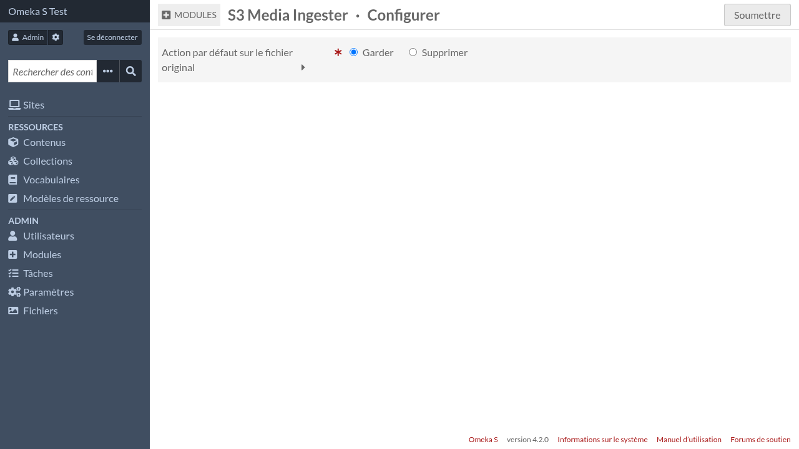

Configuration
Configuration des sources S3
Dans le fichier config/local.config.php d’Omeka, ajoutez une section comme ceci:
return [
/* ... */
's3_media_ingester' => [
'sources' => [
'my-s3-source' => [
'label' => 'My S3 source',
'key' => '<key>',
'secret' => '<secret>',
'region' => '<region>',
'endpoint' => '<endpoint>',
'bucket' => '<bucket>',
],
],
],
];
Configuration du module
Dans les paramètres du module (Admin > Modules > bouton « Configurer » de S3MediaIngester) vous pouvez choisir l’action par défaut sur les fichiers originaux (garder ou supprimer).

Cette action par défaut peut être modifiée lors de l’import de nouveaux média.